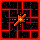
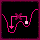
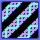
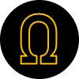

X
你的重置底數是 （基於各級別的乘積）
 時間速度 [X]
時間速度 [X]
時間速度力量：X
時間速度效果：質量獲得量 Xx
時間速度效果：質量獲得量 Xx
加速器 [X]
加速器力量：X
加速器效果：X
加速器效果：X
質量獲得量到達 X 後會被軟上限！
質量獲得量到達 X 後會被軟上限^2！
質量獲得量到達 X 後會被軟上限^3！
質量獲得量到達 X 後會被軟上限^4！
質量獲得量到達 X 後會被軟上限^5！
質量獲得量到達 X 後會被軟上限^6！
質量獲得量到達 X 後會被軟上限^7！
質量獲得量到達 X 後會被軟上限^8！
質量獲得量到達 X 後會被軟上限^2！
質量獲得量到達 X 後會被軟上限^3！
質量獲得量到達 X 後會被軟上限^4！
質量獲得量到達 X 後會被軟上限^5！
質量獲得量到達 X 後會被軟上限^6！
質量獲得量到達 X 後會被軟上限^7！
質量獲得量到達 X 後會被軟上限^8！
你的黑洞質量是 X，
將質量獲得量提升 X
黑洞對質量獲得量的加成公式：(x + 1)0.33 * X
將質量獲得量提升 X
黑洞對質量獲得量的加成公式：(x + 1)0.33 * X
你的不穩定黑洞質量是 X ,
將黑洞質量獲得量提升 X
不穩定黑洞質量越大，生產速度越慢。
將黑洞質量獲得量提升 X
不穩定黑洞質量越大，生產速度越慢。
 黑洞壓縮器 [X]
黑洞壓縮器 [X]
黑洞壓縮器力量：Xx

假真空操控器（FVM） [X]
FVM 力量：Xx
FVM 效果：不穩定黑洞生產速度 Xx
FVM 效果：不穩定黑洞生產速度 Xx
黑洞質量獲得量到達 X 後會被軟上限！
(x + 1)0.33 的公式會在 X 被軟上限
(x + 1)0.33 的公式會在 X 被軟上限
你有 X 原子力量，
免費提供 X 個時間速度
免費提供 X 個時間速度

宇宙射線 [X]
宇宙射線力量：Xx
宇宙射線效果：X
宇宙射線效果：X
你塌縮了 X 個恆星，基於各級別的效果提升質量獲得量
目前：X
塌縮恆星獲得量到達 X 後會被軟上限！
目前：X
塌縮恆星獲得量到達 X 後會被軟上限！
你有 0 個藍圖粒子，
將量子前全局運行速度加快 1x
將量子前全局運行速度加快 1x
宇宙弦 [X]
宇宙弦力量：Xx
宇宙弦效果：Xx
宇宙弦效果：Xx
aaa
aaa
aaa
提示：點擊任何圖片以顯示挑戰描述，再次點擊以進入挑戰。
你有 0 個量子碎片，經過 2^x 的運算後
將量子泡沫獲得量提升 1x
將量子泡沫獲得量提升 1x
提示 1：點擊圖片以顯示挑戰描述。
提示 2：所有量子挑戰需要量子化才可以完成。
提示 2：所有量子挑戰需要量子化才可以完成。
你有 X 個未分配夸克
比例模式：X
比例模式：X
元素第 1 階
X
價格：X
X
價格：X
X
你有 X 個相對粒子
你有 X 的膨脹質量，將時間速度加強 X
你有 X 的膨脹質量，將時間速度加強 X
膨脹質量到達 X 後獲得量會被軟上限！
你有 X 相對能量
你有 X 的相對質量
你有 X 的相對質量
你有 0 個量子理論（基於量子化次數）
你量子化了 0 次
=
你有 0 個原始素定理（基於藍圖粒子的數量）
（下一個原始素定理在 X）
（下一個原始素定理在 X）
你的頻率是 0 赫茲
你有 0 焓，將熵的每秒獲得量增加 0
你有 0 焓，將熵的每秒獲得量增加 0
你有 0 熵
你的黑洞質量是 0 g
你有 0 霍金輻射，將熵的上限增加到 0
你有 0 霍金輻射，將熵的上限增加到 0
你有 個暗束，
你有 個暗影，
你有 個深淵之漬，
每種符文最多可獲得 X 個
某一種物質基於前一種物質的獲得量公式：10lg(lg(x))2
提示：到達 ??? 的最新一種物質以獲得下一種物質！
你在挑戰 16 中的最佳黑洞質量是 X。
確認設定
增量質量（重寫版）v0.6.4.2 - 由 MrRedShark77 製作，ItMarki 翻譯
本遊戲受到 Distance Incremental 和 Synergism 的啟發製作
貢獻：Lemon、16777216 和 Aarex（繪畫）
提示 1：把指標放在標籤上方的圖片上，即可查看描述……
總遊玩時間：X
